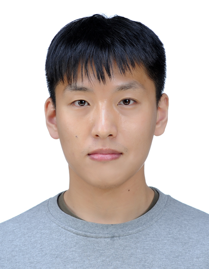
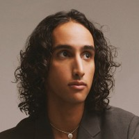

Mi Jung Park is an assistant professor in the Department of Computer Science at the University of British Columbia (Since July 2021, with a year leave to work at the Technical University of Denmark, DTU, in Aug 2023 - July 2024). She is also a CIFAR AI Chair at Amii. Prior to this, she was a research group leader at the Max Planck Institute for Intelligent Systems (MPI-IS) Tuebingen and a Cyber Valley research group leader at the University of Tuebingen.
Prior to that, she was a postdoc at the informatics institute at the University of Amsterdam (UvA)
(with Max Welling), and at the Gatsby Unit at the University College London (UCL) (with Maneesh Sahani).
She received a Ph.D. at the University of Texas at Austin (UT Austin) (worked with Jonathan Pillow).

Mingyu Kim (UBC, Aug 2024 --)
Margarita Vinaroz (University of Tuebingen and MPI-IS, May 2020 --)

Amman Yusuf (UBC, Sep 2024 -- )
William Cheng (UBC, Sep 2024 -- )
Kamil Adamczewski (ETH Zurich and MPI-IS, Jan 2019 - Aug 2023)
Frederik Harder (University of Tuebingen and MPI-IS, Mar 2019 - Feb 2024)
Jonas Koehler (University of Amsterdam, Jan 2018- Oct 2018)
Justin Yilin Yang (UBC, Sep 2022 - May 2024)
Michael F. Liu (UBC, Sep 2022 - Aug 2024)
Charlie Yingchen He (UBC, Sep 2022 - May 2023)
Anant Raj (at MPI-IS, 2017) worked on differentially private kernel two-sample test (co-supervised by Dino Sejdinovic)
Changyong Oh (at MPI-IS, 2018) worked on Bayesian neural networks
Frederik Harder (at MPI-IS, 2018) worked on differentially private deep learning
Si Kai Lee (at MPI-IS, 2019) worked on differentially private causal inference (co-supervised by Krikamol Muandet)
David Robert Reich (at MPI-IS, 2020) worked on measuring the tradeoff between privacy and interpretability
Mohammad Amin Charusaie (at MPI-IS, 2020) worked on privacy-preserving data generation using Hermite polynomials
Bahar Salamtian (UBC, 2021) worked on the topic of connecting neural network compression with differential privacy
Saiyue Lyu (UBC, 2022) worked on differentially private latent diffusion models